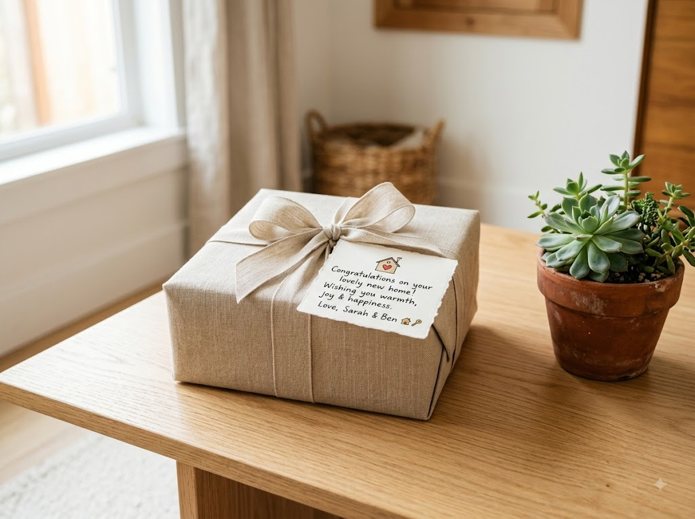
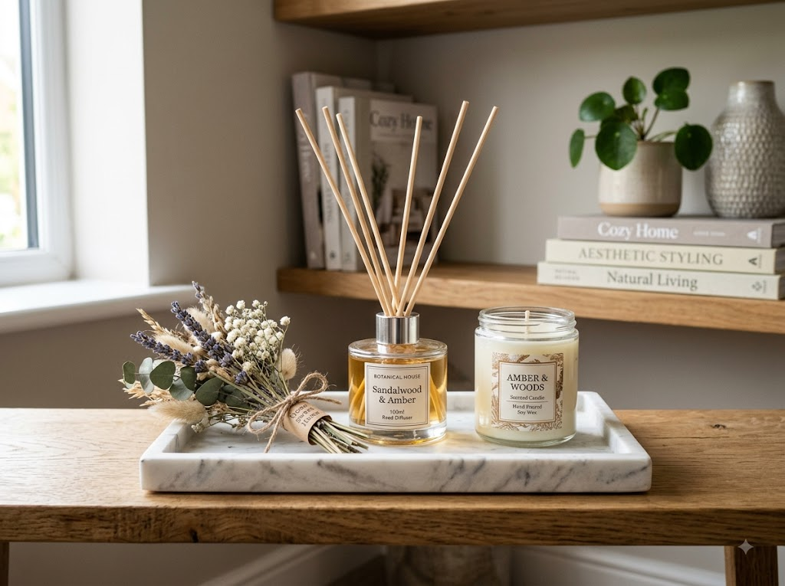

집들이 선물을 직접 들고 가지 못할 때, 배송으로 보내는 방법이 갈수록 일반화되고 있습니다. 어떤 플랫폼을 이용하면 좋은지, 포장은 어떻게 해야 실수가 없는지, 금액대별로 어떤 품목이 무난한지 — 집들이 선물 배송 실무를 꼼꼼하게 정리했습니다.
집들이 선물을 배송으로 보내는 것은 이제 흔한 방식이 됐습니다. 오히려 직접 들고 가는 것보다 받는 사람이 편하게 받을 수 있고, 보내는 쪽에서도 무거운 짐을 들고 이동할 필요가 없어 양쪽 모두에게 편리합니다.
단, 배송으로 보낼 때 주의할 점이 있습니다. 가장 중요한 것은 사전 연락입니다. 상대방이 이사·입주 준비로 분주할 수 있으므로, 선물을 보내기 전에 언제쯤 택배가 도착해도 되는지 간단히 확인하는 편이 좋습니다. 이사 당일은 짐이 많아 선물 보관이 어려울 수 있으니, 이사 2~5일 후에 도착하도록 조율하는 것이 일반적입니다.
또한 꽃·식물류는 배송 중 흔들리고 시들 수 있으므로, 꽃다발은 지역 꽃집을 통한 당일 배달이나 직접 들고 가는 방식이 더 적합합니다.
어디서 주문하느냐에 따라 배송 속도·포장 품질·선물 옵션이 달라집니다.
가장 빠르고 편리한 선택지입니다. 쿠팡 로켓배송 상품은 당일~익일 도착이 가능하고, '선물하기' 기능으로 주소를 보내지 않아도 되는 링크 전달 방식도 지원합니다. 네이버쇼핑도 '선물하기' 서비스를 통해 카카오 메시지로 받는 분의 주소를 직접 입력받을 수 있습니다.
단점은 포장이 일반 택배 박스 수준이어서 선물 특별감이 부족할 수 있다는 점입니다. 이럴 때는 선물 포장 옵션(선택 시 추가 비용)을 이용하거나, 별도의 손편지·카드를 첨부해 개인적인 느낌을 더할 수 있습니다.
카카오 선물하기는 카카오톡으로 선물 링크를 전달하고, 받는 사람이 자신의 주소를 직접 입력하는 방식입니다. 주소를 몰라도 되는 것이 큰 장점이며, 다양한 브랜드의 기프트 세트가 입점해 있습니다. 집들이 선물로 인기 있는 디퓨저 세트, 주방용품 세트, 와인·차(茶) 세트 등을 쉽게 검색할 수 있습니다.
브랜드 상품권이나 백화점 상품을 선물할 경우 SSG닷컴 또는 롯데온이 선택지가 다양합니다. 고급 주방 소도구, 브랜드 수건 세트, 향초·디퓨저 세트 등 집들이 선물로 적합한 상품이 많습니다.
꽃다발·화분 선물을 배송으로 보내려면 꽃 전문 배달 서비스를 이용하는 것이 좋습니다. '꽃집앱', '프레지아', '러브플라워' 등 당일 꽃 배달 서비스가 있으며, 지역 꽃집과 연결되어 당일 오전 주문 시 오후 배달이 가능한 경우도 있습니다. 생화는 이사 당일이 아닌 이사 후 며칠 내에 도착하도록 조율하는 것이 좋습니다.

| 금액대 | 추천 품목 | 비고 |
|---|---|---|
| 2만~3만 원 | 고급 양초·향초 1~2개 세트, 디퓨저 소형, 주방 타올 세트 | 부담 없이 감각적인 선물 |
| 3만~5만 원 | 아로마 디퓨저 세트, 와인 1~2병, 차(茶) 선물 세트, 고급 주방 소도구 | 가장 무난한 구간 |
| 5만~10만 원 | 스테인리스 냄비 1개, 브랜드 수건 세트, 블루투스 스피커, 고급 와인 세트 | 친밀도 높은 지인에게 |
| 10만 원 이상 | 공기청정기, 가습기, 브랜드 조리기구 세트, 백화점 상품권 | 특별한 관계나 집들이 파티 초대 경우 |
집들이 선물로 가장 기피하는 품목도 있습니다. 화분(뿌리 내리면 이사 못 간다는 속설)은 아직도 기피하는 분들이 있으니 사전에 취향을 확인하는 것이 좋습니다. 반대로 화장지나 세제는 실용적이어서 웃음과 함께 환영받는 선물이 되기도 합니다. 최근에는 이런 전통적 금기를 크게 신경 쓰지 않는 분위기도 늘었으나, 받는 분의 성향을 고려하는 것이 가장 좋습니다.
배송으로 보낼 때 포장 퀄리티가 선물의 첫인상을 좌우합니다. 일반 쇼핑 플랫폼에서 주문할 경우 '선물 포장 옵션'을 선택하거나, 직접 포장할 경우 다음을 참고하세요.
박스 안 완충재 충분히: 배송 중 파손이 생기지 않도록 에어캡(뽁뽁이) 또는 크래프트지로 내용물을 감싸고 빈 공간은 종이 완충재로 채웁니다. 와인이나 유리병 제품은 특히 신경 써야 합니다.
카드 또는 손편지 첨부: 배송 선물에 메시지 카드를 넣으면 직접 전달하는 것 못지않은 온기가 전해집니다. 쇼핑몰 주문 메모란에 '선물 메시지: [내용]'을 기입하면 포장 시 동봉해 주는 경우도 많습니다.
리본·선물 박스 활용: 다이소·오프라인 포장지 전문점에서 구입한 선물 리본이나 포장 박스를 활용하면 일반 택배 느낌을 줄일 수 있습니다. 품목을 직접 포장해 상자에 넣고 테이프로 봉인한 뒤 운송장을 붙이는 방식도 가능합니다.
집들이 선물을 언제 보내야 할지 고민될 때 아래 기준을 참고하세요.
배송 예약 기능이 있는 플랫폼(쿠팡·GS샵 등)을 이용하면 원하는 날짜에 맞춰 발송을 예약할 수 있어 편리합니다. 단, 택배 배송일은 물류 상황에 따라 변동될 수 있으므로 1~2일 여유를 두고 예약하는 편이 안전합니다.
집들이 선물 예산은 주로 관계의 가까운 정도, 집들이의 규모(소규모 티타임 vs 대규모 파티), 상대방의 입주 상황(전세 첫집 vs 내 집 마련)에 따라 달라집니다.
직장 동료·지인: 2만~5만 원대가 일반적. 너무 비싸면 오히려 부담을 주고, 너무 저렴하면 성의 없어 보일 수 있는 중간 지점.
친한 친구·친척: 5만~10만 원대. 집들이 파티 참석이 어려운 경우 10만 원 이상 선물로 마음을 전하는 경우도 많음.
가족: 범위가 넓어 일정 기준이 없음. 실용적인 고가 가전(공기청정기·로봇청소기 등)을 여러 가족이 함께 선물하는 방식도 흔함.
집들이 파티에 직접 참석할 경우 선물 + 본인 몫의 식사 비용(음식 공수 등에 대한 기여)이 관례로 여겨집니다. 참석하지 못하는 경우 참석 시 예산보다 약간 높은 금액의 선물을 보내는 경향이 있습니다.
아래 품목은 집들이 선물로 피하거나 사전에 확인 후 보내는 것이 좋습니다.
